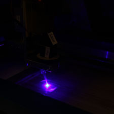
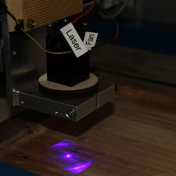
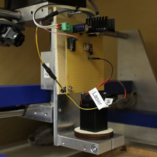
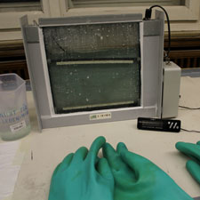
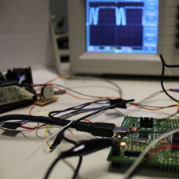

Quickly and reliably create high-quality PCBs!
-  laser in the dark
-  laser in test fixture
-  laser in test fixture II
-  chemical stripping unit
-  hipster picture with STM32 board
The PCBWriter uses a laser diode to directly expose the photoresist on PCBs. The direct exposure technique removes a lot of the typical problems with toner transfer or laser printer transparencies, allowing to reliably create PCBs even with the small structures needed for todays chips.
A similar device has been developed at Das Labor in Bochum. Experience there shows that the technique is indeed able to produce very fine structures with high fidelity.
All schematics, firmware, etc. will be published under an open-source license (BSD style).
Status of the project
The PCBWriter is currently under development. All required parts (UV laser diode, mirror assembly, y axis) have been sourced, assembly and firmware development are nearly done. Resolution and quality of the exposed PCBs has been evaluated in various test fixtures. The final assembly is currently in progress
If you are interested to participate in the development, please contact us! A public is avaible at github.
The workshop
We will shortly be offering a workshop where participants can build their own PCBWriter for use in their own workshop or local Hackerspace/Fablab. The workshop is partly fundedby VDI and BMBF. Depending on funding details, thecost for one PCBWriter will be around 100 - 200€. (Obviously, particiants can, and probably should, work in groups).
We are currently planning to have the workshop on a weekend (Friday evening - Sunday), probably at some time in March. The exact date will be announced on this website, as will be registration details.
For members of Fablabs in Germany, travel and lodging costs may be covered by the "Verbund offener Werkstätten" .
Why?
Printed circuit boards are usually produced by protecting parts of the copper layer, then etching away the unprotected parts. To selectively protect the copper, various methods can be used.
The first method exposes the photoresist on the PCB through a mask. This method is usually employed in commercial applications, as a single mask can be used to quickly expose large runs of PCBs. For hobbists, however, creating high-quality masks can be a challenge. Normally, hobbist masks are created by printing on transparencies using a laser printer. With many laser printers, the black areas have tiny holes which get transferred to the PCB, potentially breaking thin traces.
The second method, toner transfer, prints on some kind of special paper and then transfers the toner to the PCB, using the toner as an etch mask. However, as laser printers are not really designed with this application in mind, the quality of the results varies a lot between printer models.
Both methods, laser transparencies and toner transfer, are actually quite workable for PCBs with large structures (think DIP parts). Unfortunately, these days, many interesting parts come in tiny packages - think about your typical acceleromenter! Also, in space- or weight-constrained applications, like the ever more popular drones, one actually wants to use parts in the smallest packages available.
The PCBWriter project aims to make it possible to quickly and reliably create high-quality, one-of PCBs.
How does it work?
The PCBWriter essentially works like a laser printer. A laser beam is deflected by a rotating polygon mirror and thus ``scanned'' over a line on the PCB (see picture). The PCB is moved perpendicular to the line, thus writing the image line-by-line.
To create an image, rather than exposing the whole PCB, the laser needs to be modulated. An index diode near the polygon mirror allows to synchronize the modulation of the laser to the rotation of the mirror.
The mirror assembly comes from an old laser printer. However, laser printers usually use near-IR lasers, while the photoresist on PCBs is sensitive to UV light. Thus, the IR laser diode was replaced by a (much stronger) UV laser diode (~1.5W, 445nm) from eBay. The assembly for the movement of the PCB comes from an old flatbed scanner.
We use a STM32 microcontroller. Unlike the simpler 8 bit AVR microcontrollers (Arduino etc.), the STM32 offers vastly more peripherals (like DMA engines) and much faster execution speed. The PCB artwork is rendered to an image on the host PC, then transferred to the STM32 via USB. The STM32 generates the modulation for the laser diode from the image, controls the rotation of the mirror, and controls the movement of the PCB.
The slides from our talk in Aachen are available as PDF (in German).
Documentation
TBD.
Workshop
TBD. Should be later this year. Maybe august.